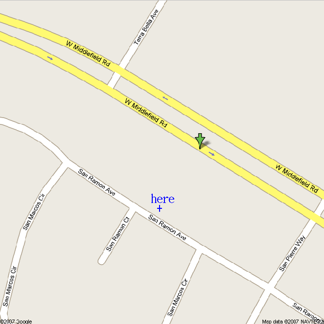
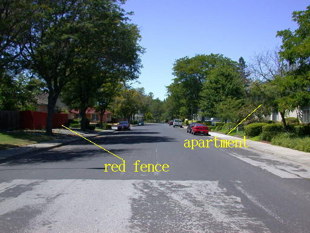
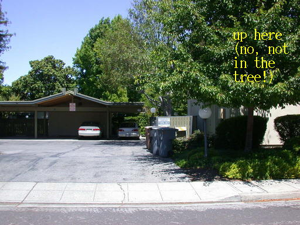
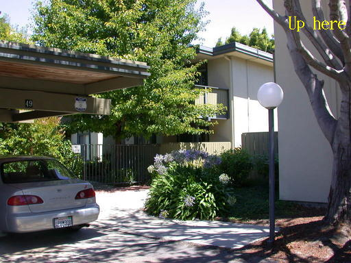
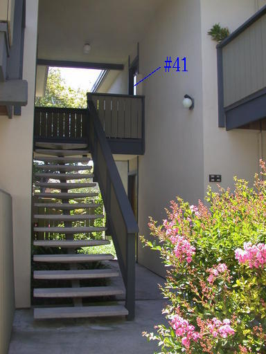
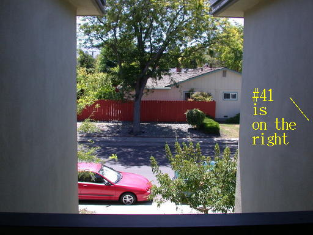

The green arrow indicates 1555
W. Middlefield while the actual apartment location is a
blue + sign.
Navigate to 1555 W. Middlefield Rd., turn southwest on San Pierre and then hang a right on San Ramon. Pass the first parking lot on your right and then park near the second parking lot on your right. You will see the red fence across the street from the parking lot.

On San Ramon with San Pierre
at your back.

On San Ramon, facing second parking
lot, with trashcans and dumpsters on right.
The red fence is directly across the street from the apartment, which is right above the dumpsters and trashcans. Enter the second parking light and take the path that comes out in the far right corner. Do not go through the gate to the pool, but turn right.

Path from parking lot to apartment
Go up the first stairs on your right and knock on the door of number 41.

Stairs up to apartment.
From the north/west direction on San Ramon to when you're facing the apartment door, you have turned 360° by making four right turns. The red fence is visible from the stairway outside the door.
